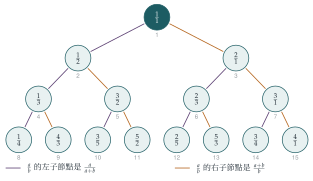

STEP III 2020，第 8 題
繼續之前，請先閱讀題目（原題為英文）。題目載於 OCR 提供下載的 2020 年 STEP 試卷（zip 檔案）內的 STEP III 試卷： www.ocr.org.uk/Images/696589-2020-past-papers.zip
引子
你能否把所有正分數逐一列出，使每個分數都恰好出現一次？這看來是不可能的：任意兩個分數之間還有無窮多個分數，根本沒有「下一個」分數可以寫下來。然而，康托爾（Georg Cantor）在 1870 年代證明了這是做得到的。這表示，在某個精確的意義下，分數並不比整數多。
康托爾的列表頗為笨拙：表中既有 \(\frac12\)，也有 \(\frac{2}{4}\)，重複的項要逐一刪去。本題要構造的列表卻完全沒有重複，而且來自一個規則簡單得出奇的數列（sequence）。這個列表由 Neil Calkin 和 Herbert Wilf 於 2000 年發表，不過數列本身早在 1858 年已由 Moritz Stern 研究過。
動筆之前
在證明任何東西之前，先計算最初十五項左右。你留意到比值 \(u_n / u_{n+1}\) 有甚麼特別之處？
數列的開首幾項是 \[1,\ 1,\ 2,\ 1,\ 3,\ 2,\ 3,\ 1,\ 4,\ 3,\ 5,\ 2,\ 5,\ 3,\ 4,\ 1,\ 5,\ \ldots\] 而比值 \(u_n / u_{n+1}\) 依次是 \[\tfrac11,\ \tfrac12,\ \tfrac21,\ \tfrac13,\ \tfrac32,\ \tfrac23,\ \tfrac31,\ \tfrac14,\ \tfrac43,\ \tfrac35,\ \tfrac52,\ \tfrac25,\ \tfrac53,\ \tfrac34,\ \tfrac41,\ \ldots\] 每個分數都以最簡分數（lowest terms）的形式出現，而且沒有一個重複。題目要你證明這個現象會一直持續下去，並且每個正分數遲早都會出現。
逐步解題
階段 1 奇數項勝過偶數項
相鄰兩項不是 \((u_{2k}, u_{2k+1})\)，就是 \((u_{2k+1}, u_{2k+2})\)。
試用 \(u_k\) 和 \(u_{k+1}\) 表示這兩種數對。哪一項較大？
\((u_{2k}, u_{2k+1}) = (u_k,\ u_k + u_{k+1})\)，而 \((u_{2k+1}, u_{2k+2}) = (u_k + u_{k+1},\ u_{k+1})\)。由於每一項都是正整數（用歸納法（induction）不難證明），\(u_k + u_{k+1}\) 比 \(u_k\) 和 \(u_{k+1}\) 都大。唯一的例外是第一對 \((u_1, u_2) = (1, 1)\)，它不符合上述任何一種形式，因為 \(u_1\) 是直接定義的。■
階段 2 相鄰兩項互質
假設 \(d > 1\) 同時整除 \(u_{2k}\) 和 \(u_{2k+1}\)，即同時整除 \(u_k\) 和 \(u_k + u_{k+1}\)。那麼 \(d\) 還整除甚麼？
\(d\) 整除 \((u_k + u_{k+1}) - u_k = u_{k+1}\)，所以 \(d\) 整除相鄰數對 \(u_k, u_{k+1}\)，而這一對在數列中的位置較前。另一種情況完全相同：若 \(d\) 整除 \(u_k + u_{k+1}\) 和 \(u_{k+1}\)，它便整除 \(u_k\)。
因此，相鄰數對的公因數會傳回較前的一對，然後再傳回更前的一對，如此類推。位置不可能無止境地減小（又是良序性（well-ordering）），所以 \(d\) 最終必須整除第一對 \(u_1 = u_2 = 1\)。當 \(d > 1\) 時這是不可能的。所以每一對相鄰項都互質（coprime）。■
階段 3 沒有數對出現兩次
階段 1 告訴你一件有用的事：看到一個相鄰數對 \((a, b)\) 時，你可以判斷 \(a\) 位於奇數位置還是偶數位置。怎樣判斷？然後，你能否還原出階段 2 所指的、在它之前的那個數對？
若 \(a < b\)，則（由階段 1）\(b\) 位於奇數位置，所以對某個 \(k\)，這個數對是 \((u_{2k}, u_{2k+1}) = (u_k, u_k + u_{k+1})\)，而它的「父」數對 \((u_k, u_{k+1})\) 就是 \((a,\ b - a)\)。若 \(a > b\)，這個數對是 \((u_{2k+1}, u_{2k+2})\)，其父數對是 \((a - b,\ b)\)。若 \(a = b\)，階段 1 表明這個數對必定是最初的一對 \((1,1)\)。
所以除第一對外，每個相鄰數對都決定了它的父數對，以及父數對的位置（這個結構可以看成一棵樹，見圖 1.8.1）：當子數對位於 \(2k\) 或 \(2k+1\) 時，父數對位於位置 \(k\)。現在假設 \((a, b)\) 出現在兩個不同的位置。它們的父數對便是出現在兩個位置的同一數對，而這些父數對的父數對亦然，如此類推。這樣一直追溯上去，我們最終會在 \(1\) 以外的位置找到 \((1,1)\)，而階段 1 已排除了這個可能。■
階段 4 每個互質數對都會出現
假設某個互質數對 \((a, b)\) 從未以相鄰兩項的形式出現。你應該考慮哪一個這樣的數對？
在所有「缺席」的互質數對之中，取 \(a + b\) 的值最小的一個：這就是極小反例（minimal counterexample）。它不可能是 \((1,1)\)，因為這一對確實出現了，所以 \(a \neq b\)（互質而又相等，必有 \(a = b = 1\)）。
若 \(a > b\)：數對 \((a - b, b)\) 互質（\(a-b\) 和 \(b\) 的任何公因數都整除 \(a\)），而它的和 \(a\) 小於 \(a + b\)。由極小性，這個數對確實出現，設它位於位置 \(k, k+1\)。但這樣便有 \(u_{2k+1} = u_k + u_{k+1} = a\) 和 \(u_{2k+2} = u_{k+1} = b\)，所以 \((a, b)\) 終究還是出現了。
若 \(a < b\)：同理，\((a, b - a)\) 出現在某個 \(k, k+1\)，於是 \((u_{2k}, u_{2k+1}) = (a, b)\)。
無論哪種情況都得出矛盾。所以每一對互質的正整數都會以相鄰兩項的形式出現。■
（題目把第 (iv) 部分寫成遞降法（descent）：一個缺席的數對會產生一個更小的缺席數對。這其實是同一個論證，只是倒過來讀而已。）
階段 5 所有分數的列表
每個正有理數（rational number）都可以唯一地寫成最簡分數 \(a/b\)，其中 \(a, b\) 互質。由階段 4，\((a, b)\) 會以某個相鄰數對 \((u_n, u_{n+1})\) 的形式出現，所以 \(f(n) = a/b\)：\(f\) 的值域（range）是全體正有理數。由階段 3，它只出現一次；又由階段 2，每個值 \(f(n)\) 本身已是最簡分數，所以兩個不同的 \(n\) 不可能給出同一個分數。因此 \(f\) 是由正整數到正有理數的雙射（bijection），並且有逆函數（inverse）。■
回顧
遞降與它的逆向。 公因數和重複的數對都是往回追溯到數列的起點。缺席的數對則用極小反例處理，向前構造。
雙射要證兩半。 「每個分數都出現」（滿射，onto）和「沒有分數出現兩次」（單射，one-to-one）是兩個獨立的命題，要分開證明。
先動手計算。 寫出十五項之後，這些命題便顯得可信，同時也提示了推動整個證明的父子結構。
背後的數學
把正分數排成一棵樹：把 \(\frac11\) 放在頂端，並給每個分數 \(\frac{a}{b}\) 兩個子節點，左邊是 \(\frac{a}{a+b}\)，右邊是 \(\frac{a+b}{b}\)。逐行由左至右讀這棵樹，得到的正是本題的列表 \(f(1), f(2), f(3), \ldots\)（圖 1.8.1）。階段 3 說明每個分數都有唯一的父節點，階段 4 說明每個分數都在樹中。2003 年，Moshe Newman 發現連這棵樹也不需要：列表中每個分數都可以由前一個分數算出，公式是 \[x_{n+1} = \frac{1}{2\lfloor x_n \rfloor - x_n + 1}.\]

不同大小的無窮
可以這樣逐一列出的集合稱為可數（countable）集合。分數是可數的，這令人意外，因為分數看來比整數多得多。在大學的第一個學期，你還會遇到康托爾的對角論證法（diagonal argument），它證明實數（real numbers）是不可數的：任何實數列表都必定有所遺漏。所以無窮確實有不同的大小，而實數所構成的無窮嚴格地大於有理數所構成的無窮。這是你在大學一年級課程中會遇到的最令人震驚的結果之一。
Stern 數列
數列 \(u_n\) 稱為 Stern 雙原子數列（Stern’s diatomic sequence），它還有許多其他面貌。例如，\(u_{n+1}\) 等於把 \(n\) 寫成 \(2\) 的冪之和、而每個冪最多用兩次的方法數目。它與 Stern–Brocot 樹以及連分數（continued fractions）關係密切，而連分數能給出無理數的最佳有理逼近。
思維技巧
要證明兩個集合大小相同，就要把它們的元素準確地一一配對：證明目標集合的每個元素都被對應到（滿射），而且沒有元素被對應兩次（單射）。
雙射是計數的基礎，不論有限還是無窮，你在大學裏會經常用到。在本題中，兩半的證明都是把一個結構追溯回它的起點。
延伸練習
找出分數。 對哪一個 \(n\) 有 \(f(n) = \frac{3}{5}\)？又 \(f(n) = \frac{5}{3}\) 呢？利用父節點的規則倒推回 \(\frac11\)。
Newman 公式。 驗證由 \(x_1 = 1\) 開始，Newman 公式能給出列表中的首十個分數。
康托爾的對角論證法。 假設你有一個列表，以小數形式列出了 \(0\) 與 \(1\) 之間的所有實數。構造一個小數，使它與列表中第 \(n\) 個數在第 \(n\) 位數字上不同。為甚麼這就說明列表並不完整？（對於像 \(0.0999\ldots = 0.1\) 這樣的小數，需要留意甚麼？）
可數並集。 較難 給出一個與正整數之間的明確雙射，從而證明由全體正整數數對 \((m, n)\) 組成的集合是可數的。（試試 \(2^{m-1}(2n-1)\)。）
延伸閱讀
Neil Calkin & Herbert Wilf, “Recounting the rationals”（American Mathematical Monthly，2000 年；〈重新數算有理數〉）。全文四頁，完全讀得懂。
Aigner & Ziegler, Proofs from THE BOOK（《數學天書中的證明》），第 17 章 “Sets, functions, and the continuum hypothesis”（集合、函數與連續統假設），當中包括 Calkin–Wilf 樹。
Ian Stewart & David Tall, The Foundations of Mathematics（《數學基礎》，Oxford University Press）。可數性、康托爾與實數，內容與大學一年級課程相若。